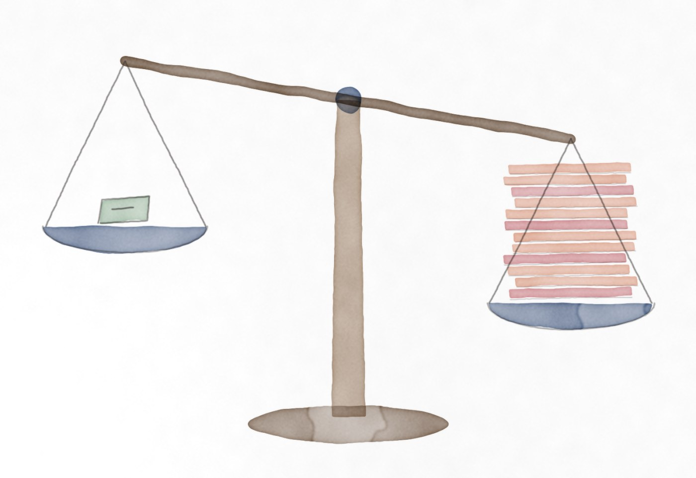
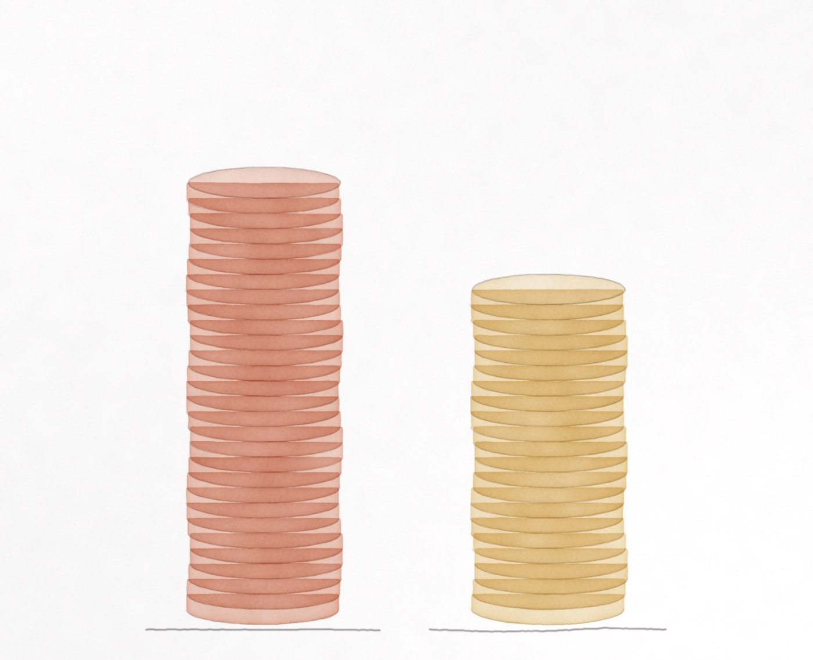
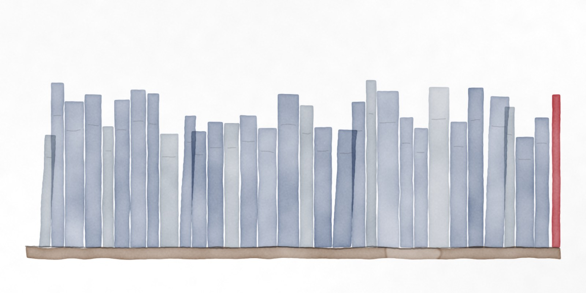

One dial for everything
Claude Code has a setting called /effort. It controls how much the model is allowed to think before it answers, in five steps: low, medium, high, xhigh and max. More thinking is slower and costs more, and on a hard problem it is worth it.
But the dial is set once, for the whole session. Over an afternoon of work, the same setting applies to a request to rewrite a scheduler, to “what port does this use?”, and to the single word “yes.” It’s easy to leave it on high and pay for deep thought on every one.
Below are real requests from the experiment and from the session that built it. Flip the switch to see what a judge would have done with each.
Some of these surprised me. The one-word “yes” lands in three different places, and the next chapters explain why that is exactly right.
A second opinion, in under a second

The judge is Jev, a “System One” model from TypeSafe AI. The name borrows from Daniel Kahneman: fast, intuitive judgement rather than slow deliberation. Jev doesn’t write code. You give it a little state and a question, and it returns a number, a confidence and a probability for each answer.
The mod asks one question per prompt. Jev sees the request, the request before it, and the end of Claude’s last reply, and scores it on a five-point scale. That score becomes the effort.
How much reasoning effort does a coding agent need for request? A short follow-up (“yes”, “do it”, “1”, “continue”) approves or continues the work proposed in last_reply or asked for in previous_request.
- Triviala quick question, a lookup, or a one-line edit
- Smalla focused change in one or two files
- Moderatea feature or bug fix across several files, a non-obvious bug, or running a multi-step workflow such as a code review
- Harda cross-cutting refactor, tricky concurrency/security/performance work, or debugging with little to go on
- Very hardarchitecture or algorithm design where a wrong call is expensive
Speed matters, because the judgement sits between pressing Enter and the model starting work. Here is every call the mod made over two days.
The dots fall into two clumps, and the gap between them isn’t Jev thinking. Jev answers in about a quarter of a second; that is one trip to its servers, which are reached through Los Angeles. The second clump is the same answer plus a new secure connection, whose handshake takes about another half second from here. Claude Code keeps a connection open for a few minutes after it is used, so a prompt sent soon after the last one lands in the fast clump and a prompt after a coffee break lands in the slow one.
So the mod now keeps the connection open itself. When it loads, it connects; while you are using the session, it sends one tiny request a minute, which Jev turns away without reading or billing; after fifteen idle minutes it stops. Measured end to end, in real Claude Code sessions, with the old mod and the new:
A call costs next to nothing. Jev charges $0.042 per million input tokens, and a question with its context is a few thousand tokens, so a hundredth of a cent at most. If Jev is slow, unreachable or returns no score, the mod gets out of the way: your own setting applies, and the band says why.
The line above the prompt
A tool that changes how hard a model thinks, silently, would be hard to trust. So the mod draws one line above the prompt, and that line has to answer three questions: what did Jev pick, what was actually sent, and how sure was it?
Try it. Pick a message, set the session’s own effort, and watch. Nothing is sent to Jev from this page and no API key is needed: each message replays the score, confidence and response time Jev actually returned for it.
/effortui.render hook; the button really toggles the mod.The word “yes”
The first version showed Jev only the message itself. Then, in the middle of building this mod, I typed “yes, fix” to approve a bug fix and watched the band drop to low. Jev had scored it 0.37: two words, nothing to do. It was wrong, but given what it could see, it was a reasonable answer.
The fix was to send the end of Claude’s last reply along with the request, and to tell Jev that a short follow-up approves whatever was proposed. After that, the same single word stopped meaning the same thing:
Long tasks bring their own edge cases, and each one needed a rule:
- A message sent while Claude is working joins a turn that is already under way. It can only raise that turn’s effort, never lower it, because “also check the tests” shouldn’t make the rest of a hard job sloppier.
- A queued message (ctrl+x enter) waits for its own turn and is judged for that turn.
- Messages nobody typed, such as subagent reports and notifications, are never judged. Neither are subagents: only the main conversation changes.
- Slash commands keep your setting. /code-review is a workflow, not a sentence.
The experiment
A tidy demo proves nothing about cost. The question is simple: on the same tasks, with everything else held fixed, does letting Jev set the effort save anything, and does it break anything?
claude -p with the task’s prompt, --effort high
--plugin-dir auto-effortcheck.py grades the result; Claude never sees itThe first run was the one that matters most to people who leave the dial on high: twelve tasks, three runs of each, with and without the mod. That is 72 sessions. At the time Jev was allowed to raise as well, and it did once: it sent the timezone bug to xhigh.

Thinking fell by about a quarter. It would be easy to stop there, but not all of that quarter was the mod’s doing. The way to check is to split the tasks by what the mod actually did to them.
On the tasks the mod lowered, thinking fell by more than half, and every run still passed. But look at the middle row. On six tasks the mod changed nothing, and they ran at the same effort in both arms, yet their thinking fell by about forty per cent anyway. That is noise. The same prompt at the same effort can think twice as long on one run as on the next, and with three runs per task, one long run moves the average a lot. Most of the headline quarter came from there.
So the honest claim is narrower. Where Jev lowered the effort, the model thought about half as much and lost nothing. Those were small tasks that hardly thought to begin with, so the tokens saved were few.
The bill barely moved for a second reason. Thinking is only a slice of what a session costs. Most of each run’s bill is reading the conversation so far, the system prompt, the tool definitions and the files, and none of that changes with effort.
Here is every task. Each line runs from the mod-off average to the mod-on average; the dot is colored by the effort the mod chose. Watch the tasks marked high: they ran at the same effort in both arms, so any gap there is chance.
Turning it up didn’t help
If lowering effort on easy work is free, raising it on hard work should be where the quality comes from. That was the original idea: let Jev push a tricky timezone bug up to xhigh.
So I ran the experiment again from medium, where Jev had room to go both ways, and then once more with four harder tasks written to need it: free calendar slots, a stale stock cache, a hand-written CSV parser and a dependency sort.
Raising did exactly what it says: more thinking, sometimes twice as much. It didn’t fix anything, because there was nothing to fix. At medium, every task already passed without the mod. The harder tasks passed twelve times out of twelve with or without the extra effort, and the extra thinking cost fifteen per cent more.
Lowering cost nothing in quality. Raising cost money and bought nothing.
So the mod now only lowers by default. If Jev thinks a request deserves more than your setting, the band says (Jev: xhigh, capped) and your setting stands. Raising is one switch away for anyone whose tasks are harder than these.
Does switching break the cache?

There was one way this could have backfired. Claude Code leans hard on prompt caching: each request re-sends the conversation, and if the cache is warm, that history is billed at a fraction of the price. If changing the effort from one turn to the next forced the cache to start over, every switch would cost far more than the thinking it saved.
It doesn’t. I went through every Claude Code session on this machine and compared requests sent right after an effort change with requests where the effort stayed the same.
The two rates are the same within noise. Two of the 32 requests after a change missed the cache, about the rate at which requests with no change at all miss it.
A budget, not a dial
The useful way to think about effort is as a budget you spend one request at a time. Spending it on “yes” buys nothing. A judge that costs a hundredth of a cent and a second of latency can tell most requests apart well enough to stop that, without touching the work that needed it.
What it can’t yet show is the other half of the bargain: that spending more on hard problems pays off. On these sixteen tasks it didn’t. Harder, longer work might be different, and the benchmark is in the repository for anyone who wants to find out.
Try it
Inside Claude Code:
/plugin install auto-effort --marketplace peterlimg/auto-effortThen give it a TypeSafe key in the environment Claude Code starts with:
export TYPESAFE_API_KEY=…/auto-effort prints what Jev picked for your recent turns and what each one actually ran at.
Run the experiment
bench/run.py # 12 tasks × 2 arms × 3 runs
bench/run.py --effort medium # let it raise, too
bench/run.py --tasks 13,14,15,16 # the harder fourEach run copies a fixture repo, runs claude -p, and grades it with a hidden test. Both arms differ only by --plugin-dir.